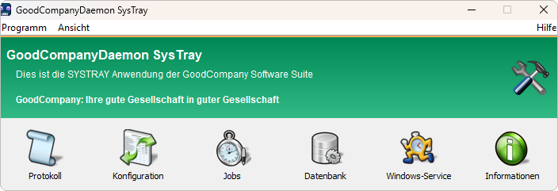

Funktionsweise
Der GoodCompanyDaemon überträgt Daten zwischen dem CentralPoint und Fremdsystemen. Er läuft im Hintergrund, prüft in einem festen Intervall auf neue Importdateien und führt zeit- oder ereignisgesteuerte Aufträge aus.
Funktionsweise
Der Daemon ist eine Anwendung im Infobereich der Taskleiste (SysTray) und lässt sich zusätzlich als Windows-Dienst betreiben. Zwei Wege lösen Arbeit aus:
- Importdateien. In einem einstellbaren Intervall sucht der Daemon im hinterlegten Pfad nach Dateien und liest sie ein.
- Daemon Jobs. Aufträge aus Kommandos, die zeitgesteuert oder direkt nach einem Import laufen.
Hauptfenster

| Menüpunkt | Zweck |
|---|---|
| Protokoll | Aufzeichnung aller Aktivitäten des Daemons — erste Anlaufstelle bei Störungen |
| Konfiguration | Einstellungen der Importe und allgemeine Einstellungen; Bereiche ASCII CSV Import, Vectron-Kasse, KAKOM, Timer sowie Filialen und Kassen |
| Jobs | Übersicht aller Daemon Jobs, bearbeiten und ausführen |
| Datenbank | Konfiguration der Datenbankverbindung |
| Windows-Service | Betrieb als Windows-Dienst einrichten |
| Informationen | Angaben zur Anwendung, unter anderem die Version |
Was importiert und exportiert wird
Der Import liest Stammdaten und Zeitdaten aus Fremdsystemen. Der Export entsteht über Daemon Jobs: Daten werden per SQL in Dateien geschrieben, zusammengeführt, umbenannt oder verschoben — zum Beispiel Zeitdaten für die Lohnbuchhaltung oder Abverkaufsdaten für ein Warenwirtschaftssystem.
Unterstützte Importformate
- Artikel, EAN und Warengruppen aus OrgaSoft
- An- und Abmeldungen von BBN- und Samuelson-Kassen
- Zeitdaten von BIT-Kasse, CTI AC-10a/AC-20a, Chipdrive Time Recording, DataMobile clockWORK
- KABA und NovaTime für Zutrittskontrolle und Zeiterfassung
- OPTIback OptiCash2: Artikel, Artikelgruppen, Kunden, Personal, Scannercodes, Warengruppen
- Personalzeitdaten im cpz-Format
- einfache und generische Zeitdatenformate, auch mit Filialen
- Flugdaten
- Devisenkurse
- Import aus der ITR Kasse im CSV-Format: Artikel, Artikel je Filiale, Hauptgruppen, Kunden, Warengruppen
Unterstützte Exportformate
- Umsatzdaten im Vectron-Format und im OrgaSoft-Format
- Transaktions-, Bediener- und Zeitdaten im KAKOM-Format
- Zeitdaten für BBN und OPTIback
- Berichte zu Umsatz, Verkäufen und Transaktionen
- freie Exporte per SQL
Die Jobs und ihre Parameter stehen in ITR Partner Service → Produkte → GoodCompanyDaemon → Daemon Jobs: Referenz.
Zu beachten
- Ohne die Zuordnung von Kassen zu Filialen können Importdaten keiner Filiale zugewiesen werden. Diese Zuordnung ist die Grundlage jedes Stammdatenimports — siehe ITR Partner Service → Produkte → GoodCompanyDaemon → In Betrieb nehmen.
- Anbindungen an Vectron-Kassen und an KAKOM sind eigene Fremdsystem-Schnittstellen und in ITR Partner Service → Schnittstellen beschrieben.
Veraltete Bereiche
Die Konfigurationsbereiche Vectron Analyse, Filialüberwachung und Optionen sind veraltet. Sie sind noch vorhanden, werden aber nicht weiterentwickelt und nicht unterstützt. Verwenden Sie sie nicht in neuen Installationen.
Weitere Informationen
- ITR Partner Service → Produkte → GoodCompanyDaemon → GoodCompanyDaemon installieren
- ITR Partner Service → Produkte → GoodCompanyDaemon → In Betrieb nehmen
- ITR Partner Service → Produkte → GoodCompanyDaemon → Daemon Jobs einrichten
- ITR Partner Service → Produkte → GoodCompanyDaemon → Daemon Jobs: Referenz